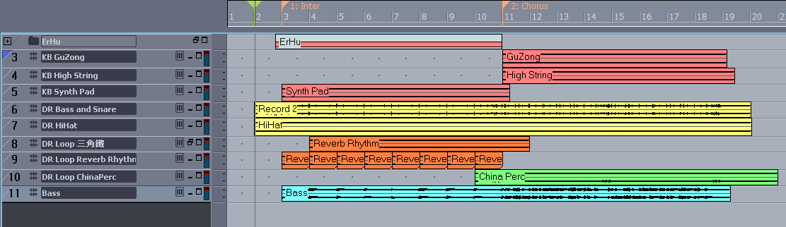

Loop 的概念與應用實例 - One Night in 北京
發布日期：2010-08-28
Loop 字面上 的意思是: 循環, 反覆, 迴路, 橡皮圈 …. etc. 在音樂製作中, 中文可以翻譯成 “循環樂句”, 或者 “反覆段落”. 簡單說就是一段一直反覆播放的 “樂音”.
廣義的來說, 一段鋼琴彈的 C 和弦, 一段用吉他彈的 Power Chord/Riff, 鼓的節奏 …. 也都可以算一種 Loop, 但是這種 Loop 通常需要有額外的參數, 簡單說, 要人去控制.
但是一般說的 Loop, 通常會是內容是平常不容易聽到的 素材音樂, 或者 音效效果. 像是一段空間效果 (有襯底 / PAD 的功能), 一段傳統樂器效果 (中國國樂, 民俗口技), 或者一段音效 (爆炸聲, 口白, 對話, 一小段 Rap, 蟲鳴鳥叫, 流水聲 … etc).
或者一段很特別的演奏技巧, 很複雜的琶音, 也可以用 Loop 的方式來呈現.
常見的 Loop 的種類
節奏類 / 主律動 / 鼓 / Bass / Percussion: 現在的數位音樂製作中, 很多 VSTi 音色庫都提供很多現成的素材可以用, 通常上述的幾種都有很龐大的資料庫, 而且依據曲風分類. 這些東西可以讓編曲者/創作者, 利用疊積木的方式創作出複雜的歌曲.襯底 / PAD: 用 Loop 來作襯底, 通常都是用來製造氣氛, 製造空間感, 在慢歌/R&B 裡很常出現, 文章後面會有一些參考例子.插音 / Fill: 這類通常都是一些民俗樂器, 特殊效果的取樣, 如果沒有想要的, 就必須自己後製 / Customized. 本文提到的例子 - One Night in 北京是應用到這種. 所以我自己製作了這兩段 Loop.效果 / 音效 / 戲劇: 這類的和襯底很類似, 也是用來製造氣氛, 但是會用在歌曲段落的轉折處, 歌曲裡出現的次序不多, 也可能很多.
廣義的 Loop - “動態” 的 Loop - Arpeggios / Phrase / VSTi Libraries
-
Arpeggios (琶音器) / Phrase (樂句): 這是現代很多合成器的開發重點 (賣點) 之一, 像是 Yamaha MOTIF 系列的 Arpeggios 資料庫, Korg 的 Karma 系統 … 等.
-
VSTi 樂句資料庫: 現代的軟體音源要做到原聲樂器擬真, 大多已經不是問題. 接下來各大廠商比較的就是樂句資料庫. 要做到提供的花樣多, 編輯能力強, 現場的即時性, 同時提供類似 Loop 概念的 View ….etc, 已經是各軟體的主打了. 以下是最常見的類別:
- Drum Pattern
- Percussion
- Electric Guitar Riff
- Acoustic Guitar Rhythm
- Walking Bass
- Slap Bass
- Synth Bass
- Synth Effect
- … etc
現場樂團什麼時候 “可能” / “可以” 使用 Loop
- 現場沒有該樂手, 歌曲僅短暫出現, 用來點綴, 但有畫龍點睛的效果. 像 “One night in 北京” 出現的中國銅鈸是很好的例子.
- 屬於 “音效” 的範疇, 非 “樂音”, 像是飛機聲, 爆炸聲 … 等. “音效”, “樂音” 的概念請參考 “基礎聲學” 的說明.
- 製造空間效果, 通常有用來代替襯底 PAD 的功能.
- 戲劇效果: 一段口白, 對話, 甚至是電影個段落音效.
- 創作團的草稿 / Demo: 大家窩在練團室一起創作, 打開軟體, 隨便點一些 Loop 播放, 亂疊. 然後一起 Jam.
- 只有一個人表演的時候: 這在 Youtube 不難發現很多類似的影片 (Ex: KT Tunstall, 非常精采的表演), 用一台 Loop Pedal , 像是一把吉他 + Loop Pedal 作出鼓 + 和聲 + 效果 + 唱歌 … etc. 或者是喜歡玩 Beat Box 的也有類似的概念.
現場表演 / 樂團 Loop 應用 / 軟硬體相關設備:
硬體

Roland SPD-S / 數位打擊版
(圖片引用自 Roland 官方網站)

鼓手 Q 毛老師 (照片引用自杰倫樂隊 Facebook)
杰倫樂隊鼓手 Q 毛老師在練團室的情況, 譜架旁邊的就是數位打擊版
SDP-S 通常由鼓手負責, 因為就從音樂進行中的時間點來看, Loop 是一個 “點”, “點” 的東西就是由鼓手或者 DJ, 甚至是打擊樂手 來負責是最適合的.
所以像 SDP-S 這種設備, 也有可能會出現在 DJ 的設備清單裡.
地板型
- DigiTech Jamman
- DigiTech GNX3, 4
- Roland RC-20XL Loop Station
合成器 (Synth) / DJ:
- Roland Fantom X/G
- Korg KAOSS 系列
軟體
就更多到不像話了, 簡單說可以反覆播放一段音樂的軟體都可以 (會應用的話 Winamp 也算), 所以我就不列了. 那現場呢? 帶一台 Notebook, Macbook, iPhone, iPad ….. 只要能執行程式的硬體就行了.
會幹這件事情的, 通常是 KB or DJ. 不過身為吉他手的我, 曾經做過 …. orz, 就是接下來說明的例子.
Loop 應用實例 - 信樂團 - One Night in 北京
先聽聽原曲, 以及編曲上的思維分析:
歌曲大概用到幾段可能的 Loop:
- 前奏 / 主歌 / 間奏: Reverb Percussion Loop, 目的是營造時間空間感.
- 副歌: 中國銅鈸 / China Percussion Loop, 呼應京劇唱腔與搖滾節奏
創作者陳昇說過這段歌曲的創作背景, 歌詞的描述中跨越了千年, 時間與空間交織. 所以第一段的 Reverb Percussion Loop 這樣的編曲, 是非常符合歌曲的意境的.
歌曲副歌已京句唱腔, 呼應了歌曲主題 “北京” - 中國的代名詞. 編曲時可以代表中國的樂器有很多, 以信樂團的曲風 - Rock - 來看, 編曲時找一個以適合搖滾節奏的中國樂器 - 銅鈸 - 是再適合不過了, 同時也呼應京劇的唱腔.
當然歌曲一開始的畫面式效果, 直接就點出了前年前的戰亂情景. 這首歌陳昇提過, 除了歌詞描述的千年時空戀情, 還有反戰的意味. 間奏的二胡 Solo 則呈現了戰爭所帶來的悽涼 ….
其他非 Loop 的中國樂器, 間奏使用了二胡, 副歌的和弦使用了類似琵琶類的音色. 搖滾 + 中國的配器, 意義深遠的歌詞, 這一首無疑的是一首無論詞 / 曲 / 編曲都是上上之選.
上述賞析的部分可在 “如何聽一首歌” 找到介紹.
現場表演配器的安排以及 Loop 的配置

上圖的編曲畫面是我幾年前為了作場, 而事先編的一段. 主要目的就是盡量讓原曲原汁原味的呈現, 同時也是用來跟團員溝通的一種方式.
圖中呈現的樂手配置如下:
- 紅色 Channel 是 KB 負責的
- 黃色 + (Loop: 橙色 + 綠色) 為鼓手
- 藍色為 Bass.
以現代樂團的標準編制: 鼓 + GT + KB + Bass + Vocal. 這段除了吉他, 其他三人都 Cover 了. 唯一跟一般不同的是, 鼓手必續在進間奏和副歌時, 用數位打擊版播放 Loop.
聽看看, 呈現的感覺如何: Loop 應用 - One Night in 北京
爲了節省說明時間, 我製作的這段是從歌曲的間奏開始, 之後接歌曲的副歌. 這段主要有 Loop 有三段, 其中的兩段 (Reverb Rhythm, 三角鐵) 因為時間重疊, 所以最後我把他們輸出成同一組:
- China Percussion: 前奏第二段, 副歌前一小節, 第一拍下
- Reverb Rhythm Loop + 三角鐵: 前奏第一段, 主歌和間奏第一小節第一拍下
想要順利搭這首曲子, 除了要準備上述的兩段 Loop, 另外最重要的就是鼓手要聽 Click, 由鼓手帶領整團的節奏 (這不是理所當然的?). 這首歌 Tempo 約 88 BPS.
因為以上圖編曲的段落來看, 這兩段 Loop 的長度都是 8 小節, 所以整個樂團必須要 “跟隨” 這兩段 Loop 的時間來走, 而播放 Loop 的是鼓手, 所以原則上這首歌, 整首從頭開始, 鼓手就要開始跟 Click 跑. 這點是必要的, 否則只要有人拍子跑掉, 整首歌聽起來就會亂成一團.
另外我設計成一個 Loop 長度播放為 8 小節的原因是, 希望讓鼓手減少打數位打擊版的次數. 當然這也有風險, 因為鼓手如果第一拍忘了打, 那整首就毀了. 所以這個方法可以再依照鼓手的習慣來調整.
為什麼要強調這兩段 Loop?
因為 “One Night in 北京”. 如同前段 “編曲上的思維分析” 所描述, 少了這兩段 Loop, 聽起來就不是 “In 北京” 了, 可能是 “in 倫敦”, “in New York” …. or somewhere …. 反正就是沒有中國的感覺, 聽起來只是一首一般的流行搖滾, 沒啥特色. 所以我個人很要求樂團一定要做出這兩段 Loop, 做不出來這兩段, 這首歌就不要做.
所以最後整理, 樂團想要應用 Loop 的必要條件:
- 聽出來歌曲哪裡需要使用 Loop
- 找到適合的 Loop, 或者自己做
- 全團 必須 (MUST BE) 跟 Click, 最好由鼓手聽 Click 來帶整個樂團 (看看 Q 毛老師的經驗分享)
- 鼓手最好備有 數位打擊版, 或者去有提供打擊版的練團室. 台北的練團室我還沒看過提供的, 這就很可惜了 …
這些條件, 在大型演唱會裡, 是每個樂手的基本能力. 一個 Cover 團有沒有一定程度, 從這點是看的出來的.
最後是我製作這段 Demo 的相關資訊:
- 鼓, Bass 音源: Roland Fantom X8,
- 中國銅鈸: SRX-09 World Collection
- 二胡音源: mini ErHu (Free)
- Loop: Roland Drum Kits + Sonar 後製
沒有做的很精緻, 只是想呈現一個想法, 套在樂團的編製上是可行的.
同時開放這兩段 Loop 給讀者使用, 如果有樂團現場表演使用這兩段 Loop, 歡迎來信給告訴我你的想法, 或者表演時跟我說, 我也期望能夠親自去聽看看.
很多年前, 我曾經想在樂團時嘗試用這樣的方式來詮釋這首曲子, 不過後來是失敗的. 歸納幾個原因如下:
- 鼓手沒有數位打擊版, 也不太可能強迫鼓手去添購一個.
- 整個樂團大部分的樂手沒有聽 Click 的習慣, 還有練團是 Click 監聽也是一個大問題. 但是實際上只要鼓手帶耳機聽 Click, 大家跟鼓手就可以了.
- 當時是由我的 GNX4 來播放 Loop + Click, 但是吉他手畢竟不是樂團裡的 Time Keeper, 所以即使我個人有聽 Click 的習慣, 但是鼓手還是比較容易掌控整團的速度.
- 另外最棘手的就是溝通上的問題: 大部分的團員不知道這段的重要性, 也不曉得如何去安排編製上的問題. 所以往往搭這樣的歌, 只是在跑龍套, 和弦跑完就下一首了. 實際上這樣搭出來的曲子和態度都是很失敗的.
一些 “可能” 或者 “可以” 使用 Loop 的例子:
- 鄒承恩 痞客四 - Perfect Stranger (痞子英雄片尾): 歌詞 “What will stop in my way” 開始, 音效的 Loop
- 蔡淳佳 - 等一個晴天: 前奏, PAD
- 張穆庭 - 南京1937 (老船工) : 間奏戲劇效果
- Tank - 專屬天使: 第二段主歌, PAD
- Bon Jovi - It’s My Life: 第二段開始 (01:40), 最後一段副歌前 (02:54), Loop 類似 One Night in 北京, 但可有可無.
- T-Square - Survivor (2009, Discoveries): 前奏 PAD
- The Black Mages - Clash on the Big Bridge: 前奏 Arpeggios (這段 KB 功力夠是可以彈的, 只是不容易. 我曾經用 Fantom X 的 Arpeggios 功能設計過這段, 是可行的)
- 董運昌 - My Ocean (風潮唱片, 我的海洋): 海洋音效. 順便推見這張很棒的專輯, 專輯的海聲都是取樣自南台灣墾丁的海岸聲, 加上一些來自台灣的音樂家的演奏, 非常舒服的專輯. 台灣電視訪談節目拿這張的音樂做節目襯底音樂.
- Karunesh - Clouds and Winds (Sounds of the Heart): 全曲亮晶晶的襯底 + 流星
Loop 在現代數位音樂的製作中, 有越來越重要的趨勢, 很多歌, 不管快的慢的, 都會融合這種可以天馬行空的元素. 可以用隨身的錄音設備 (ex: iPhone) 錄一段捷運進站的聲音, 開門的聲音, 車子呼嘯而過的聲音, 電視播放的聲音, 跟朋友對話的聲音 …. etc, 素材生活中隨手可得, 然後融入音樂中.
現場樂團如果選到這樣的歌曲, 想要把歌作的好, 作的有味道, 做到原汁原味的呈現, 要思考一下, 自己樂團是否有這樣的配置 / 設備 / 資源 / 概念, 或者要重新以現有原團成員的資源 / 編製, 重新編曲.
延伸閱讀 (站內)
- 基礎聲學與數位音樂製作
- 襯底 PAD 的基本概念
- 樂團的經營
- 個人監聽系統
參考資料／延伸閱讀 (站外)
- Q 毛老師的現場表演經驗分享 - 當代樂手
- 鼓手與 PA 的關係 (Q 毛老師的分享) - 當代樂手
更新紀錄
- 原文位址：https://rickmidi.blogspot.com/2010/08/loop-one-night-in.html
- 2010/08/28: 初版
- 2025/12/24：搬遷至 www.GTCafe.com